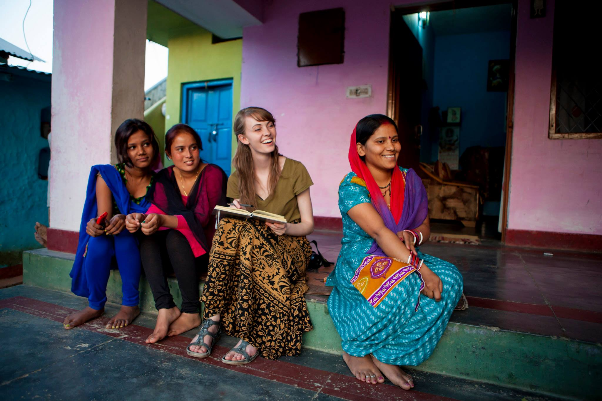
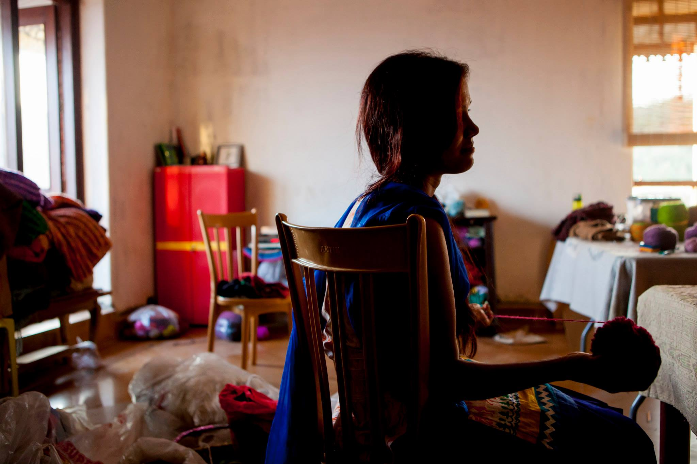
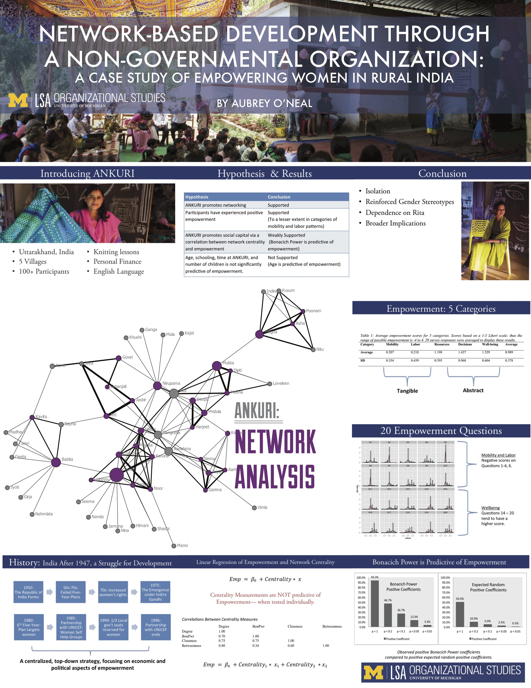

Ankuri: Rebrand and restructure
Role: Education designer and review board lead
May 2015 - July 2015
Ankuri is a nonprofit located near Dehradun, India. It seeks to empower women through financial education and the selling of their knit products. It also seeks to empower women socially, by creating strong networks and diverse opportunities.
I volunteered at this nonprofit because they wanted to build a brand and marketing presence from scratch in order to sell beautiful knit products and to bring voluntourists to their bed-and-breakfast, a new venture at the time. They also wanted to evaluate the structure of the NGO to see if they were creating valuable opportunities through social networks.
I volunteered at this nonprofit because they wanted to build a brand and marketing presence from scratch in order to sell beautiful knit products and to bring voluntourists to their bed-and-breakfast, a new venture at the time. They also wanted to evaluate the structure of the NGO to see if they were creating valuable opportunities through social networks.
From product photography to web development, I established this Indian nonprofit's first online marketing presence. They now reach audiences in America and Europe. I also conducted a network analysis for my undergraduate thesis to determine social capital provided by the nonprofit. This work was done in partnership with two other talented designers.
It was vital for our design team to understand the culture of the village if we were to help the nonprofit through branding, marketing, and a potential restructure. Therefore, we spent the first week casually stopping by houses, going on walks with locals, and attending family gatherings, a wedding, and the local shops. We also began teaching English at a summer school program and learning to knit from the women. And finally, we traveled to local markets and did an online competitive analysis to understand current products, competitors, and marketing strategies.
We then held group discussions about life in the village and pros/cons of the nonprofit. This was a casual beginning to the more formal interviews that would take place later. We used the cultural insights from these discussions to rewrite our interview questions.
Eventually, we conducted 33 interviews, which informed for the branding project and for insights on restructuring the nonprofit. We recorded and transcribed 30 audio profiles of nonprofit participants, in order to dig deeper into life stories of knitters. These later became a book written by Luna Archey. These profiles also gave ethnographic details for the network analysis.

It was vital for our design team to understand the culture of the village if we were to help the nonprofit through branding, marketing, and a potential restructure. Therefore, we spent the first week casually stopping by houses, going on walks with locals, and attending family gatherings, a wedding, and the local shops. We also began teaching English at a summer school program and learning to knit from the women. And finally, we traveled to local markets and did an online competitive analysis to understand current products, competitors, and marketing strategies.
We then held group discussions about life in the village and pros/cons of the nonprofit. This was a casual beginning to the more formal interviews that would take place later. We used the cultural insights from these discussions to rewrite our interview questions.
Eventually, we conducted 33 interviews, which informed for the branding project and for insights on restructuring the nonprofit. We recorded and transcribed 30 audio profiles of nonprofit participants, in order to dig deeper into life stories of knitters. These later became a book written by Luna Archey. These profiles also gave ethnographic details for the network analysis.